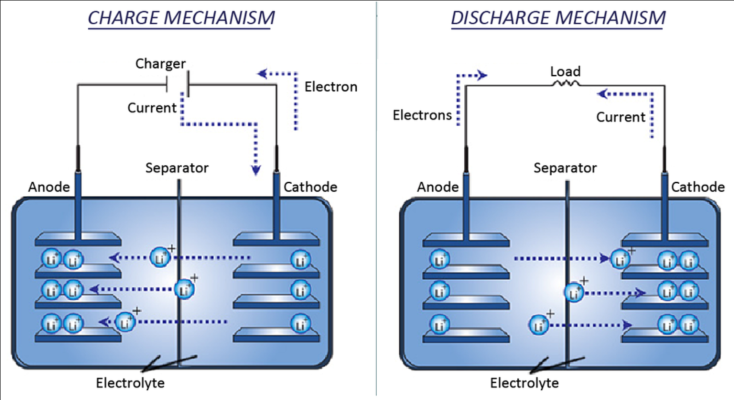

The Japanese company Sony was the first to successfully develop lithium-ion batteries as a new green battery to replace lead-acid and nickel-metal hydride batteries. Negative and positive electrodes, electrolytes, separators, and external packaging make up the majority of lithium-ion batteries.
Through procedures like lamination and winding, the positive electrode, negative electrode, and separator are shaped into a square or circular form. To create a lithium-ion battery, an electrolyte is injected into the spaces and sealed with steel, aluminum, or other shell materials.
When a lithium-ion battery is discharged, the basic mechanism is for the lithium ions to leave the positive electrode, move through the electrolyte, and become embedded in the negative electrode. This causes the electrons to move in the external circuit, which generates external power.

Lithium ions serve as a carrier of electrical energy during each charge and discharge cycle. They do this by constantly switching between the positive and negative electrodes, interacting chemically with the materials of the electrodes, and converting electrical and chemical energy into one another.
Lead-acid and nickel-metal hydride batteries are currently being supplanted by lithium-ion batteries in the consumer electronics and power battery industries.
The following are the primary causes:
- High voltage- Compared to lead-acid and nickel-metal hydride batteries, the voltage of a lithium-ion battery cell can reach 3.7 V, which is a much higher voltage. It is evident that the higher the voltage when the capacity is known, the more energy the battery can release (Wh). The energy that a battery can release can be roughly understood as voltage (V) and capacity (Ah). Lithium-ion batteries have inherent advantages in terms of voltage since the voltage of the battery is primarily determined by the kinds and properties of the materials used for the positive and negative electrodes.
- High energy density- The ratio of battery energy to the mass (volume) of the battery system, or the quantity of electricity that can be stored per unit mass (volume), is referred to as energy density. When assessing capacity, this indicator is frequently used. Since lithium is the lightest metal, batteries that use lithium ions as energy carriers have a higher energy density and a lighter mass. In contrast, the energy density of lead-acid and nickel-metal hydride batteries is significantly lower than that of lithium-ion batteries because of the heavy weight of lead and hydrogen-absorbing alloys.
Lithium-ion batteries have been widely used in many different fields due to the aforementioned advantages. The primary application areas are currently separated into three groups: Lithium-ion batteries for consumers as well as power-type and energy-storage lithium-ion batteries. Consumer lithium-ion batteries are primarily found in portable electronics like laptops, bracelets, and cell phones. Whereas energy storage batteries are utilized in distributed energy storage and smart grids, power lithium-ion batteries are primarily found in cars and power tools.